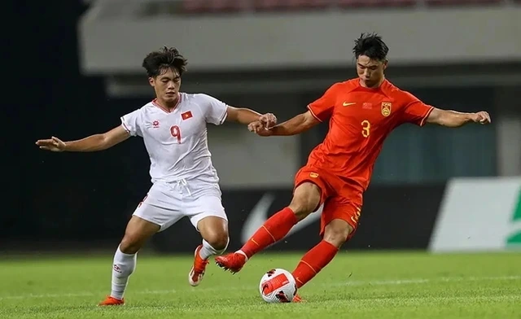

La nueva promesa llamada a la selección
El fútbol chino vive un momento de entusiasmo gracias al meteórico ascenso de Liang Wei, un joven delantero de apenas 18 años que se ha convertido en la sensación de la Superliga China tras su explosivo debut con el Shanghái Dragons.
Su actuación más comentada llegó durante el clásico frente al Beijing United, donde deslumbró al público anotando tres goles en solo 20 minutos. Este desempeño ha despertado el interés inmediato de varios clubes europ...
Saber más
